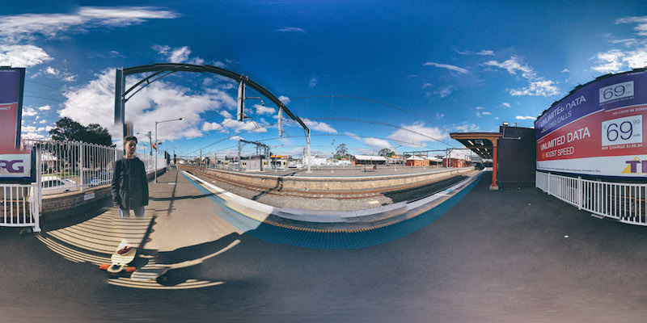
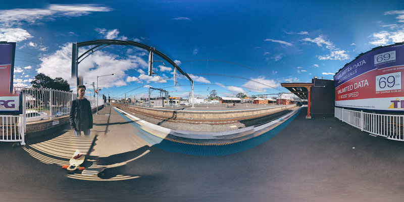

CONCEPT
SUMMARY
The point of this artwork was to show the derelict state of our house that we recently moved out of.
Having lived in that place for 16 years there are many memories in that place that I have forgotten about, the crackly radio that used to play every morning, the lounge room that has contained every single one of my hobbies for the past decade, the fridge with the same photographs still stuck to the door, the dining room that I have eaten for almost every meal of my life.
This artwork tries to convey the feelings of nostalgia that can be contained in a place that used to be so familiar, but has now faded to the dark decrepit corners of memory.
EXPERIMENTATION
Before taking the final images I travelled around a few places to try and get a feel for taking 360˚degree photos. It is surprisingly difficult to take a photo without any stiching errors (straight lines that should line up, but dont). These stiching errors being part of the 360 photography medium, limited by the technological ability of modern cameras

 

These images were used purely for testing purposes only as they did not fit my concept. They also didn't fit the style of image that all the other 360 photos had.
ADDITIONAL IMAGES
I was never fully sure whether the 360˚degree photos would work or not. So as a back up I took these photos, after taking them I started to think about how I could incorporate them into my artwork, but due to time and data constraints (360 environments require photos to be high definition which makes them bigger files to download).


Tools used
The entire scene (floating sphere and camera to view it) was coded by me using the following tools: